Capítulo 22
La pintura más humana
Desde finales de los años 1860, y más exactamente desde 1869, en París, en el café «Guerbois»1 de Batignolles, comenzó a reunirse un grupo de pintores. En ese grupo entraban Auguste Renoir, Claude Monet, Edgar Degas, Berthe Morisot, Alfred Sisley y otros. Todos ellos fueron después adscritos al número de los pintores impresionistas. Su líder fue Édouard Manet, entonces ya universalmente conocido y reconocido líder del nuevo arte francés.
Édouard Manet fue discípulo del académico Couture. Hoy es muy interesante ver en el museo de Orsay sus obras: en una pared, el enorme lienzo académico de Couture «Los romanos de la decadencia», y enfrente cuelgan los pequeños cuadros de Édouard Manet. Y da la impresión de que entre ellos hay realmente un abismo, de que pertenecen a dos épocas completamente distintas. Édouard Manet era un auténtico hombre de la nueva época, del nuevo tiempo. Édouard Manet era un hombre que pensaba y vivía de un modo absolutamente distinto. Dijo: «Es hora de volver a la pintura. El fin de la pintura es la pintura2, la tarea del cuadro es la pintura». ¿Y cómo volvía él a ella? Decía: «Para volver a la pintura hay que girar la cabeza hacia atrás, hacia su origen, hacia aquel punto donde surgió el cuadro pictórico europeo, donde surgió el arte de caballete europeo, donde fue declarado, donde se plantearon las tareas de la pintura y donde fueron resueltas. Es decir, hacia los venecianos del siglo XVI».
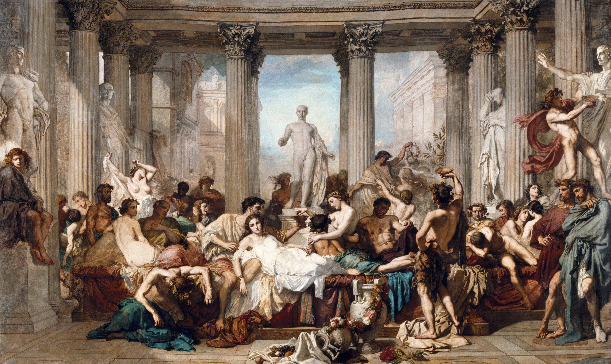
Miremos el cuadro de Giorgione «Concierto campestre», donde sobre la hierba, en el calor sofocante del verano, están sentados dos hombres vestidos con instrumentos musicales y dos hermosas mujeres desnudas. Ese calor, ese pastor que lleva los rebaños por el camino… El cuadro se llama «Concierto», pero no en absoluto porque allí las personas toquen instrumentos musicales, sino porque hay en él una cierta armonía: armonía del hombre y la naturaleza, cierta consonancia, el asombroso sonar simultáneo de distintas voces, instrumentos, sinfonismo pictórico.
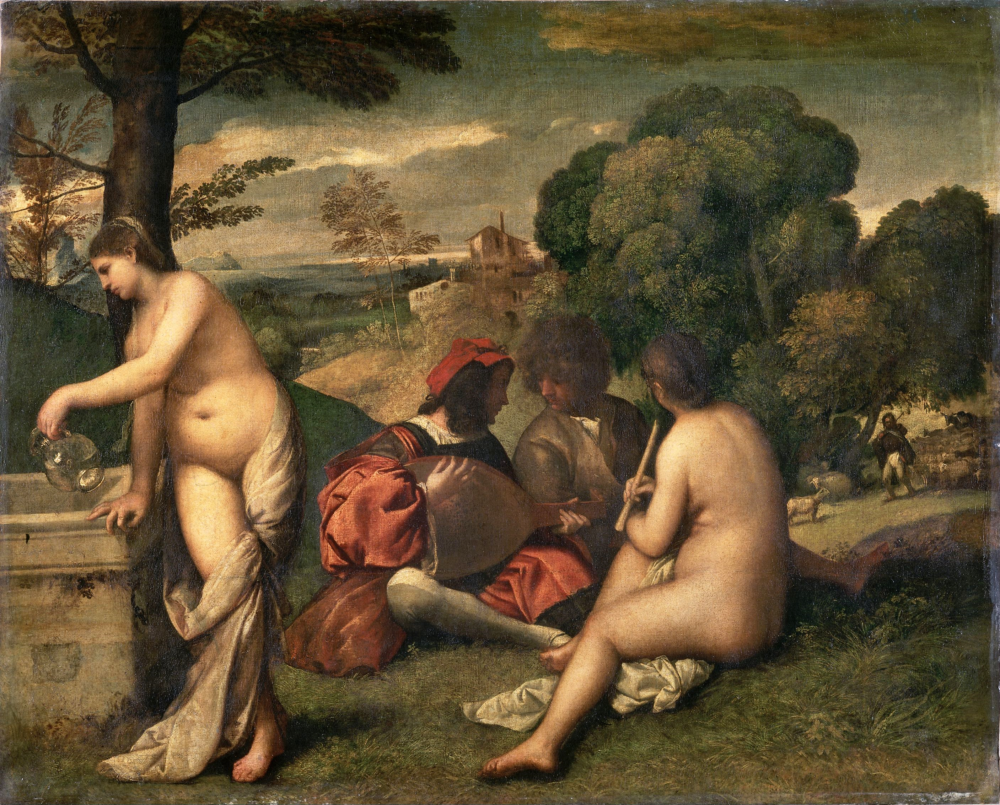
Ese cuadro, después de tantos años, Édouard Manet de algún modo lo repite, como copia de autor, y pinta su «Desayuno sobre la hierba». Eso significaba el regreso a los orígenes pictóricos. Cosa asombrosa: volviendo a los orígenes de la pintura, creaba un cuadro absolutamente nuevo, que no representa nada más que lo que vemos en él. Pero es extraordinariamente interesante, muy inusual por su composición, por su tarea. Ese picnic, esas dos mujeres: semivestida y desnuda… Y además toda Francia reconocía a la desnuda: era la famosa cortesana Victorine Meurent3. Y toda Francia reconocía a los hombres que estaban sentados sobre la hierba. Por supuesto, fue un shock, una provocación. Pero la cosa no está en la provocación, la cosa está en que eso era precisamente el regreso a la pintura. El cuadro era una obra de pintura, y no agitación, ni moral, ni sermón.
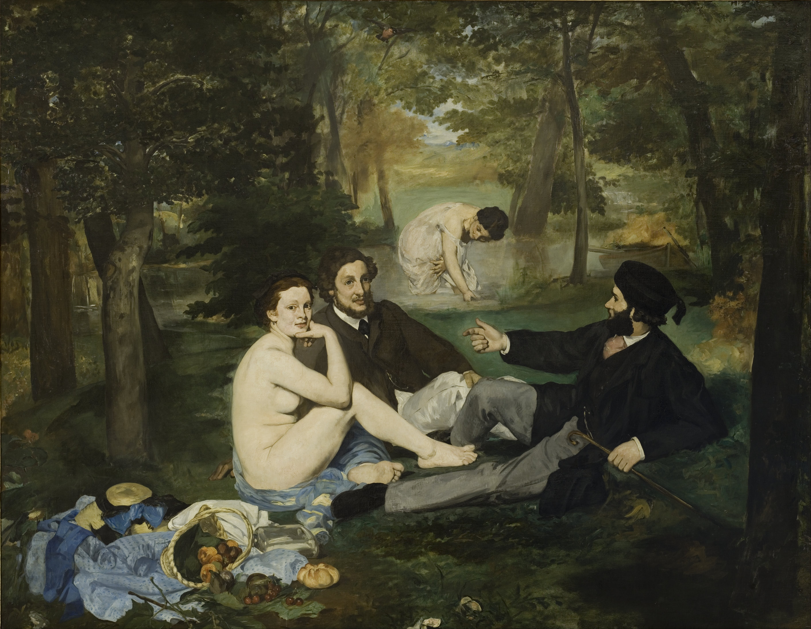
Estos pintores no se interesaban en absoluto por la vida social: no leían a nadie moralejas, no se interesaban por ricos y pobres. Simplemente describían la vida a su alrededor. ¿Y cómo la describían? Iban a los pequeños circos-carpa, iban entre bastidores del teatro, pintaban palcos, bailes. El famoso «La Grenouillère» de Renoir representa a simples empleados, a mujeres de lo más corriente, que se reunían los domingos a divertirse. Estos pintores nos dejaron la imagen de París. Gracias a ellos conocemos los talleres donde se hacían sombreros, conocemos los pequeños cafés, las cantantes… lo conocemos todo. Una descripción tan completa de la vida, del mundo vivo, real, no inventado, que respira, como la que ellos dejaron, no la dejó nunca más nadie. No es el intelectualismo de las construcciones sobre el tema del bien y del mal, es la vida misma.
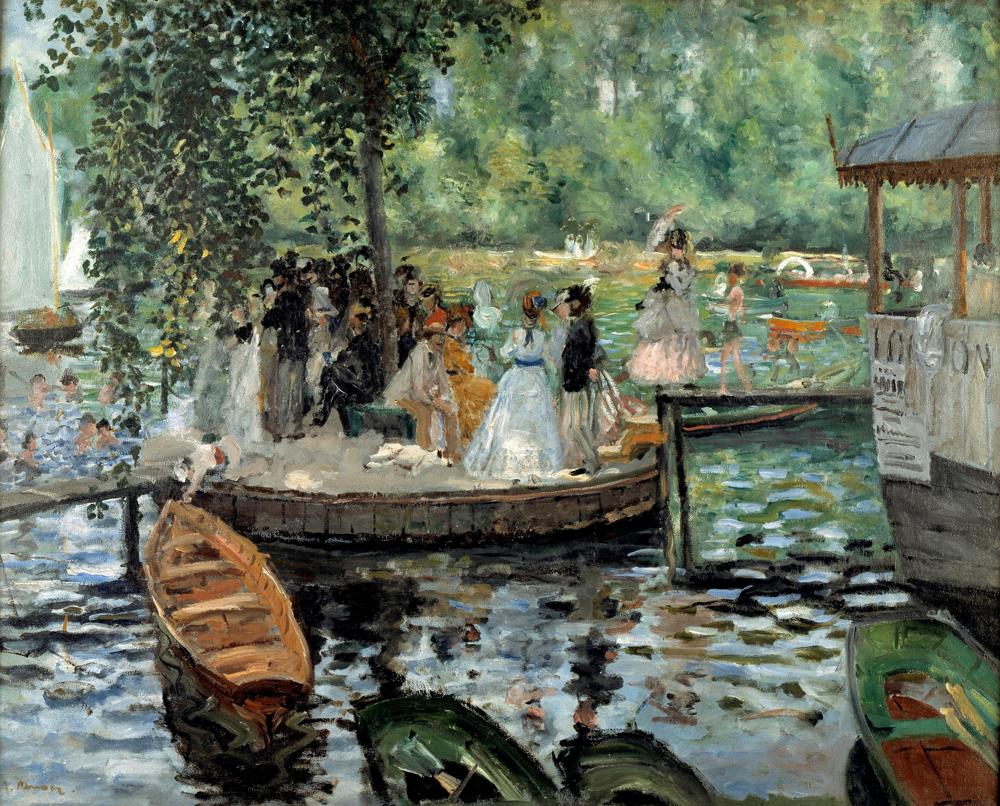
En todos estos cuadros hay una cosa asombrosa: cierta fragmentariedad; parecen describir un fragmento arrancado de la vida. Miremos «El palco» de Renoir: podemos mover el marco del cuadro en cualquier dirección, ante nosotros hay como simplemente un fragmento de espacio. El espacio se vuelve fragmentario, el tiempo se vuelve corto, y no prolongado, no petrificado. Esos gemelos alzados del hombre que otea los otros palcos, esa mirada lánguida de la mujer, ese ramo sobre su pecho… O la niña acróbata bajo la cúpula del circo en Degas4: está representado el instante en que echa la cabeza hacia atrás. Es un fragmento de tiempo, de espacio, de acción, de movimiento.
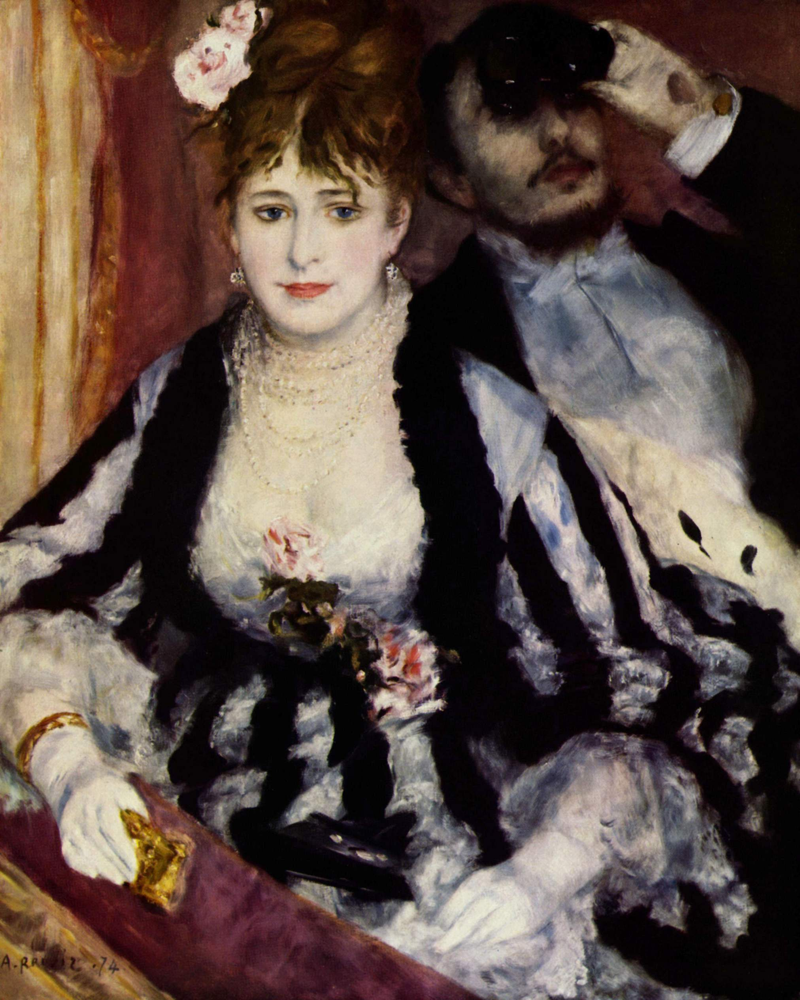
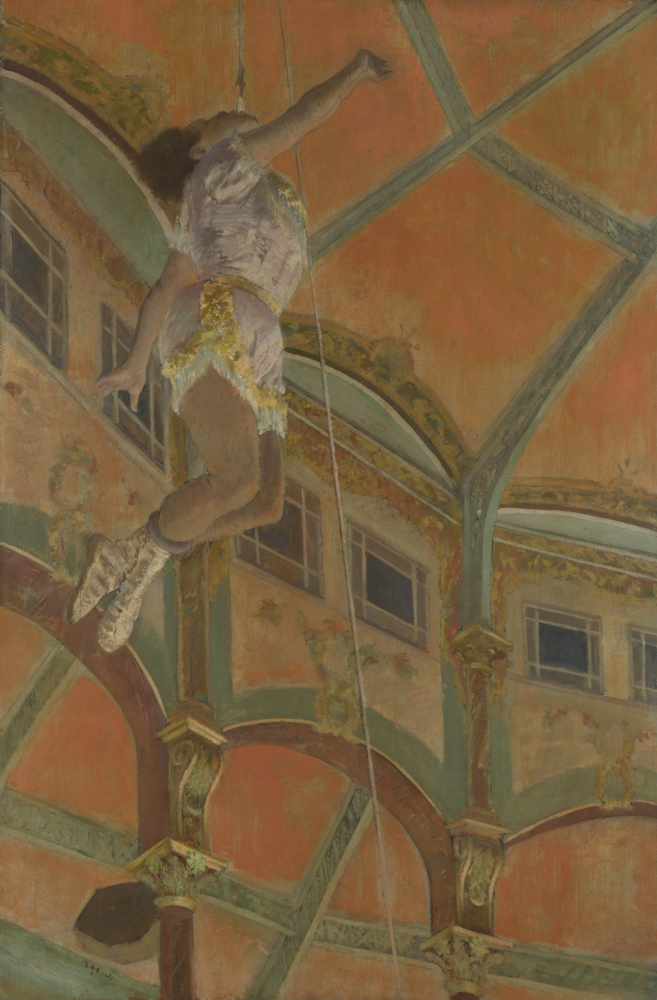
La tarea del pintor ha cambiado, la finalidad del cuadro ha cambiado. En esa fragmentariedad, en el elemento del tiempo y del espacio, probablemente está contenida la aguda sensación de contacto con la vida. Miremos «Las carreras» de Degas5 o sus cuadros sobre el tema del ballet: se crea la impresión de que usted es partícipe de esa acción. Las personas del cuadro no posan para usted; usted es como un observador, como si espiara tras ellos. Cualesquiera cuadros pinten estos artistas, usted tiene siempre, en primer lugar, una sensación muy aguda de presencia dentro, de unidad en el espacio y, en segundo lugar, un sentimiento vivo, como el que uno tiene en la calle, en la conversación: «esto es aquí y ahora, esto no se ha petrificado para los siglos». Por eso los impresionistas se convierten en los primeros grandes poetas de la nueva ciudad, del nuevo mundo, de la plenitud de toda su vida. Es la sensación de que usted vivió entonces, estuvo en aquel café del cuadro de Degas «Ajenjo»6, donde estaban sentados esos dos, tan solos, tan desgarrados. Qué luz perlada se vierte desde la ventana… Y después usted lo olvida, olvida siempre ese instante de observación, cae en un estado de goce por contemplar los cuadros. Están pintados de un modo tan asombroso que después usted pierde la conexión con la acción y comienza a vivir la belleza de la pintura misma. Los impresionistas fueron los primeros en hacer de la pintura el objeto de su arte. Fueron ante todo pintores.
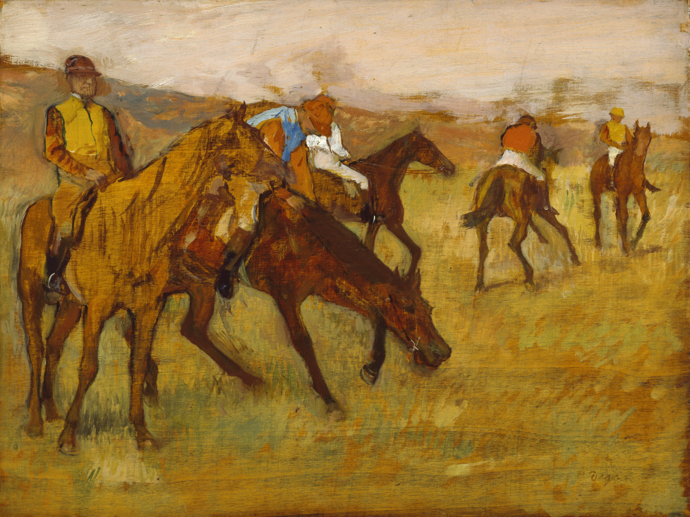
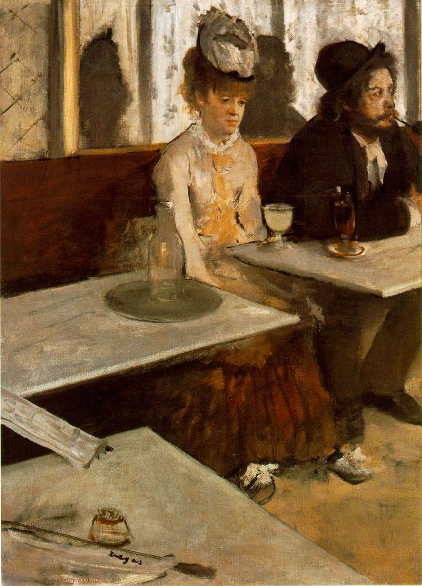
Y he aquí que en 1874 ocurrió un acontecimiento importante, bien conocido por nosotros: en el bulevar de los Capuchinos, en el fotoatelier del fotógrafo Nadar, se inauguró la primera exposición de los impresionistas. Allí se mostró un pequeño cuadro de Claude Monet que se titulaba «Impresión. Sol naciente». Ese cuadro se convirtió en un hito en la historia del arte. Los críticos llamaron a estos pintores impresionistas, de la palabra impression, es decir, «impresión». Pintan la impresión.
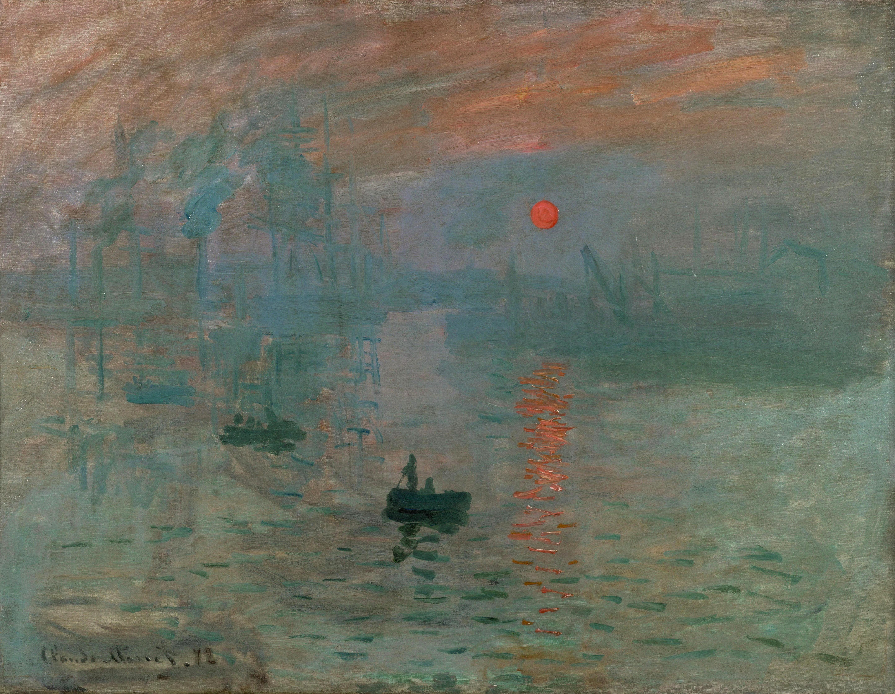
Es un nombre convencional, aceptado en la literatura. Pero el único verdadero y consecuente impresionista fue Claude Monet. Siempre pintó el mundo exterior, la naturaleza. No le ocupaban en absoluto las escenas de la vida. Le interesaba el estado de la naturaleza, la impresión de la naturaleza.
Hubo un episodio interesante en 1824, cuando el poeta y crítico de arte Charles Baudelaire7 visitó el taller de Delacroix. Delacroix lo invitó para mostrarle su cuadro «La matanza de Quíos». Baudelaire miró largo tiempo el lienzo y después dijo: «El cuadro hay que pintarlo de tal modo que, si se le da la vuelta, no pierda nada en su contenido pictórico ni en su equilibrio pictórico». Si se da la vuelta al «Concierto campestre» de Giorgione, no perderá nada en su equilibrio pictórico. En Claude Monet eso existe desde el principio: ese equilibrio, como en un juego de espejos, el asombroso reflejo del cielo en el agua y del agua en el cielo. Al cuadro «Sol naciente» se le puede dar la vuelta, y tampoco perderá nada.
Miremos una obra suya más tardía: «La abadía de Westminster».8 Quizá no sea un cuadro, sino un estudio, porque está pintado del natural en un breve intervalo de tiempo: si se pinta más tiempo, cambiará la iluminación, cambiará el contenido del cuadro. ¿Es un estudio o un cuadro? ¿Un cuadro o un estudio? Se borra la frontera, el mundo pierde su densidad material. La abadía de Westminster es como una sombra; la niebla y el agua son todas sustancias iguales. Si se da la vuelta al cuadro, resultará que vemos el reflejo de la abadía de Westminster.
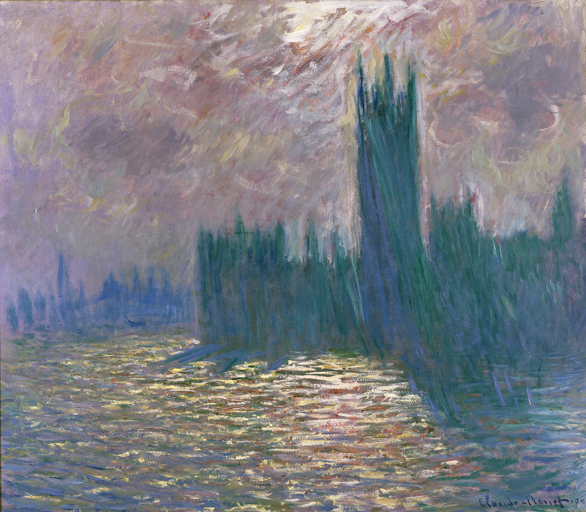
En el arte ahora hay otro héroe. Antes era el hombre y todas las relaciones humanas. Y ahora el héroe ha dejado de ser el hombre: el hombre está simplemente incluido en ese espacio que se ha convertido en héroe. El verdadero héroe ahora es la luz. Los impresionistas pintan la luz. Pintan la vibración de la sustancia cromático-lumínica del mundo. Esto es propio de todos los impresionistas en distinta medida, y para Claude Monet es el tema principal. De ahí surgen géneros pictóricos absolutamente nuevos. Por ejemplo, la representación de un mismo motivo, porque ya no hay asunto, o de un mismo objeto repetido muchas veces. Por ejemplo, la serie de representaciones de la catedral de Ruan: a distintas horas del día esa vista tiene distinto contenido. Como escribió Mandelstam: «Sé encaje, piedra, y vuélvete telaraña…»9 La catedral también en la vida es encaje y telaraña, y cuando la pinta Claude Monet, casi se disuelve, se vuelve un todo único con el aire y la luz. La estación de Saint-Lazare también la pinta a distintas horas del día, desde distintos escorzos. Y es siempre una estación distinta. Es la combinación del vidrio, los hangares, el tren que llega, el humo de la locomotora que lo envuelve todo… Impresión.
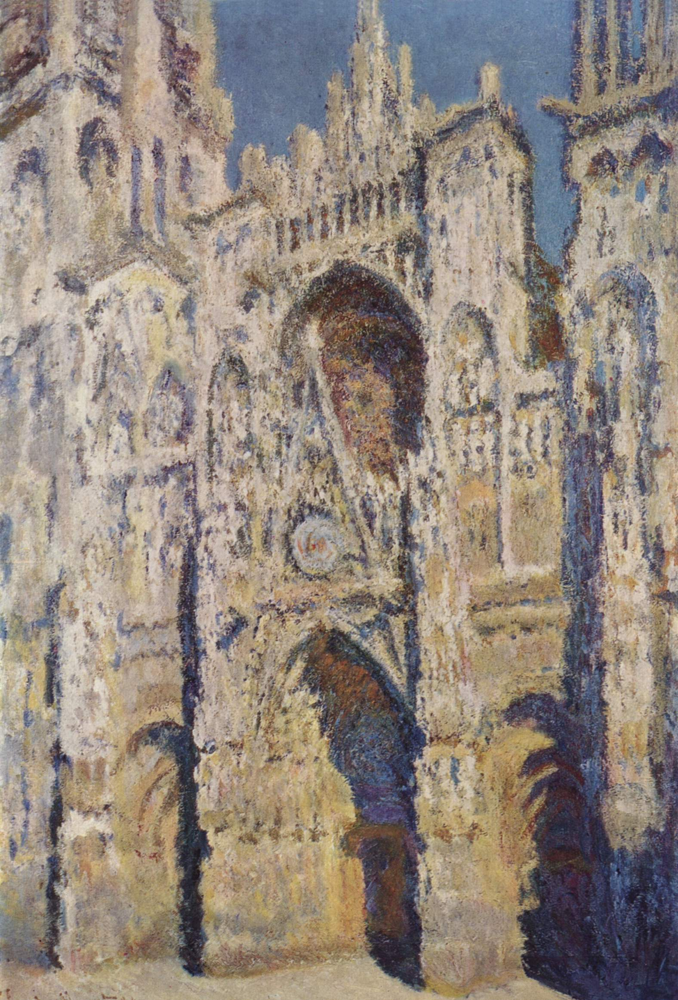
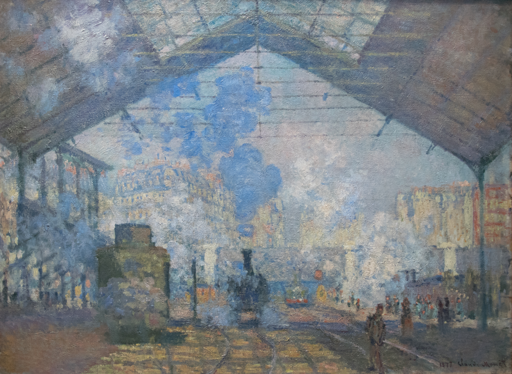
Las últimas cosas de Claude Monet son muy interesantes.10 Se le volvió indiferente qué pintaba: puede pintar un solo nenúfar, una sola flor… Agua, y en ella un nenúfar, y todo eso es un gran lienzo. Sus cuadros resisten cualquier ampliación. Están pintados de un modo muy interesante; usted todo el tiempo piensa: aquí termina el cielo y empieza el agua, aquí están los sauces que se inclinan desde arriba y se reflejan en el agua… ¿o al revés? Resulta una saturación estética y artística extraordinariamente profunda. Y es descanso: Claude Monet relaja; durante la contemplación de sus cuadros usted descansa y recibe al mismo tiempo tanto, tal carga de vida…
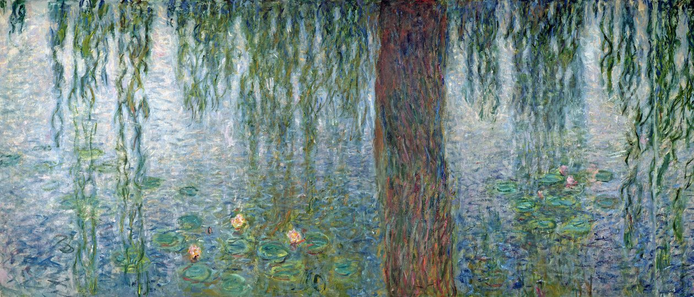
Claude Monet abrió una nueva página en la pintura europea. Propuso un nuevo héroe, un nuevo método. Claude Monet no era un hombre de tradición, pero creó tradición. He ahí lo interesante: creó una tradición que existe hasta hoy. Hoy, sin lo que Claude Monet abrió en el ámbito de la pintura, es impensable cualquier pintura. Hay un cuadro muy pomposo de A.M. Guerásimov, donde Stalin y Voroshílov pasean en el Kremlin; se le llama irónicamente «Dos líderes después de la lluvia»11. Y allí lo principal no es que sean líderes, sino que todo ocurre después de la lluvia: así está pintado ese cielo, esa acera mojada, esa hierba mojada. Ese cuadro lo pintó un artista soviético, uno de los baluartes del realismo socialista, pero habría sido imposible sin los descubrimientos en el ámbito de la pintura hechos no por unos impresionistas cualesquiera, sino precisamente por Claude Monet. Como si hubiera llegado un hombre y hubiera tirado del mantel de la mesa: ¡todo salió volando! Así también Monet: propuso otra mirada sobre el mundo, abrió nuevos horizontes.
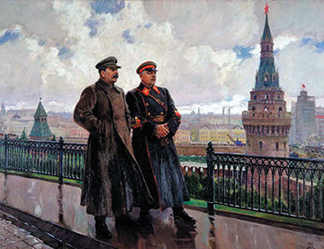
Hoy vemos muchas cosas con los ojos de los impresionistas. Ellos como que nos lavan los ojos: uno ve de otro modo el cielo y el agua, tal como los veían ellos. Genialmente dijo de Claude Monet Camille Pissarro: «Él no solo me abrió los ojos, liberó mi conciencia»12. Y es realmente así: Monet liberó nuestra conciencia.
Hay que decir además lo más importante sobre los impresionistas, no como pintores, sino sobre por qué estamos todos enamorados de su pintura. No solo porque mirar sus cuadros es puro goce, alimento estético, sino también porque es el único grupo de pintores que estaba absolutamente positivamente dispuesto hacia el mundo. No le desgarran a uno, no le inquietan. Lo mismo puede decirse de los retratos rusos del siglo XVIII: sus autores se relacionaban positivamente con sus modelos, los pintaban positivamente, con mucha humanidad. Y en grado aún mayor esto es cierto respecto a los impresionistas: hasta qué punto es humano el modo en que ven el mundo, y lo que ven en el mundo, y cómo describen sus impresiones sobre el mundo. Es la pintura más humana en toda la extensión de los siglos XIX y XX.
Notas del editor
1. Las reuniones del café Guerbois (Grande-Rue des Batignolles, hoy avenida de Clichy) comenzaron hacia 1866 y duraron hasta mediados de la década de 1870. Berthe Morisot, como mujer de buena familia, no pudo frecuentarlas. Se relacionaba con el grupo en los salones y talleres.
2. No hemos podido documentar esta frase en boca de Manet. Recuerda el lema de «el arte por el arte» y la conocida fórmula de Maurice Denis (1890) sobre el cuadro como superficie plana cubierta de colores.
3. Victorine Meurent (1844–1927) fue modelo profesional, además de pintora (expuso en el Salón desde 1876), no una «famosa cortesana». Los hombres del cuadro no eran figuras públicas que «toda Francia reconocía»: posaron Eugène o Gustave, hermanos de Manet, y el escultor Ferdinand Leenhoff, futuro cuñado del pintor.
4. Edgar Degas, «Miss La La en el circo Fernando» (1879, National Gallery, Londres): la acróbata Anna Olga Albertina Brown, suspendida de una cuerda que sujeta con los dientes.
5. Degas pintó numerosas escenas de carreras. La lámina del libro reproduce «Antes de la salida» (1882–1884, Walters Art Museum, Baltimore).
6. «La absenta» (1875–1876, Orsay): la actriz Ellen Andrée y el grabador Marcellin Desboutin en el café de la Nouvelle Athènes. Véase la nota del capítulo 21.
7. Imposible: Baudelaire nació en 1821. Véase la nota correspondiente del capítulo 20.
8. Monet no pintó la abadía de Westminster. La lámina del libro, así titulada, es una de las más de cien vistas del Parlamento de Londres (Palacio de Westminster) que Monet pintó entre 1900 y 1905, a partir de sus estancias londinenses de 1899–1901. Las terminó en su taller de Giverny: no son, pues, obras pintadas «del natural en un breve intervalo de tiempo».
9. Verso de Ósip Mandelstam, del poema «Odio la luz…» («Я ненавижу свет…», 1912), incluido en «Piedra» (1913).
10. Se refiere a los «Nenúfares», el gran ciclo pintado en Giverny entre 1914 y 1926. Monet los donó al Estado francés, y en 1927 se instalaron en las dos salas ovales del Museo de la Orangerie.
11. Aleksandr Guerásimov, «Stalin y Voroshílov en el Kremlin» (1938, Galería Tretiakov), premio Stalin en 1941. El apodo popular juega con la rima rusa «Два вождя после дождя».
12. No hemos podido localizar esta frase de Pissarro.